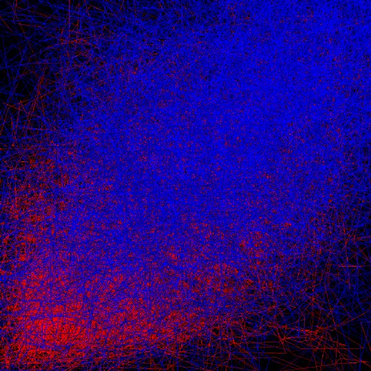
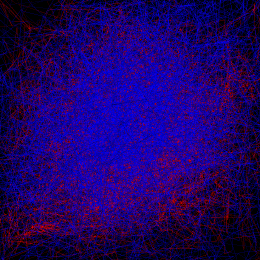
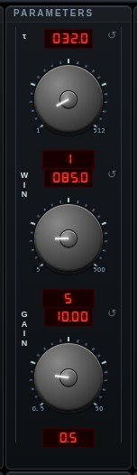

#takens


Takens Delay Embedding — attractor reconstruction from a single signal (F. Takens, "Detecting strange attractors in turbulence", 1981). Each trail point is the delay vector (s(t), s(t−τ), s(t−2τ)) of the live audio: a pure tone draws a closed loop, music and speech trace the geometry of whatever produced them. τ is the embedding delay, counted in samples at a fixed 48 kHz reference so that one knob position is one DURATION — the same delay whether the sound is arriving from a 48 kHz microphone or a 24 kHz server feed, which is what it was not when the number was read as raw samples of whatever happened to be playing. The default of 72 is 1.5 ms; the MEAS readout says what the current setting is in milliseconds. MEAS measures τ rather than guessing it: the first minimum of the signal's average mutual information (Fraser & Swinney 1986), reported beside the false-nearest-neighbor embedding dimension m (Kennel et al. 1992). It also runs BY ITSELF, once, as soon as the mode has enough audio to measure — and again if the source is swapped, because τ is a property of what is playing. Once is the whole of it: nothing here re-tunes itself per frame, because a knob that moves with the music makes the figure move with it. Press the button to measure again, or turn the knob and it stays where you put it. An m above 3 means the trail you are looking at is a projection of a higher-dimensional reconstruction. SRC picks which signal of the live pair is embedded. Takens' theorem takes ONE observable and this is the choice of which: the mix, either channel on its own, mid, or SIDE — what the two channels do not have in common, which on a real mix is the reverb and the room rather than the instruments, and which reconstructs a different manifold from the same recording. WIN is how much time the figure spans, in milliseconds — short is live and legible, long draws a denser tangle that turns over more slowly; GAIN sets how large a full-scale sample draws. The scale is fixed — nothing auto-ranges, so quiet passages draw small and loud ones large, and the view never moves under you; the camera is fitted once to what full scale can reach, so peaks stay on screen. SMTH is the beam smoothing between samples, and it is the trade between how much WINDOW is on screen and how smooth the line is, since both come out of one vertex budget: at 1 the figure is raw chords through four times as many samples, which is what to use to see a long window; at 16 it is a glass-smooth beam through a short one. A straight line from one delay vector to the next is a chord, and chords are the hard corners you can see — an artifact of the drawing, not something in the signal. The same knob serves the stereo and polar embeddings. Audio comes from the active source — websocket stream, microphone, or the signal generators.
Open Takens Embedding in chaosrack →It opens running, on the model selector, with its own knobs. Rotate it by dragging, zoom with the wheel, and turn the parameters to see what the figure does when the system changes.